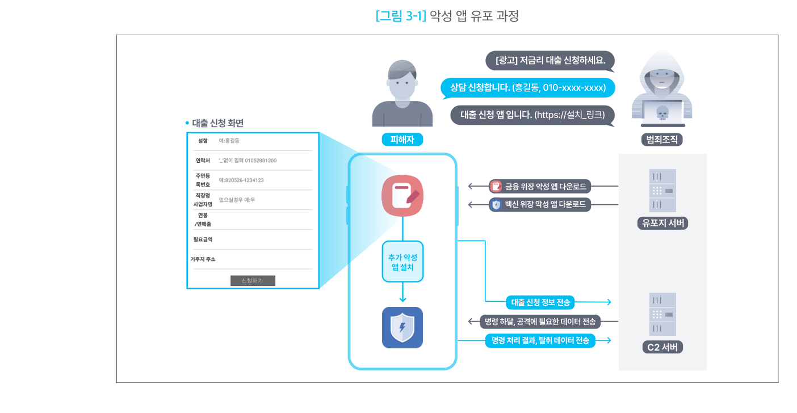
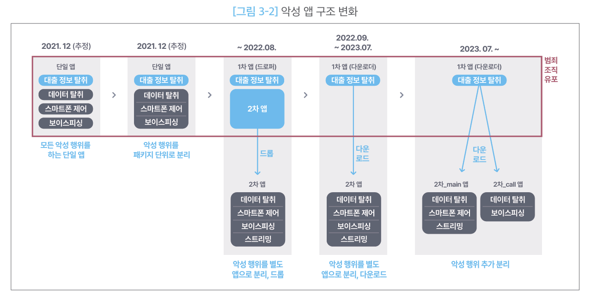

로더·드로퍼·다운로더형
1. 개요
이 유형은 직접 돈을 빼가는 앱이 아니다. 진짜 악성 기능을 가진 앱을 피해자 휴대폰에 들여보내는 것이 목적인 첫 번째 앱이다. 겉모습은 정상 앱이고, 하는 일은 "문을 열어주는 것"뿐이다.
국내 보이스피싱에서는 이 구조가 반복해서 확인된다. 금융회사나 공공기관 앱으로 위장한 1차 앱이 먼저 설치되고, 그 앱이 전화 가로채기·원격제어·정보 탈취를 실제로 수행하는 2차 앱을 설치한다.
1-1. 세 가지 방식
이름이 세 개인 이유는 2차 앱을 들여보내는 방법이 다르기 때문이다.
- 드로퍼(Dropper) — 2차 앱을 자기 안에 숨겨서 들어온다. 나중에 그것을 꺼내 설치한다.
- 다운로더(Downloader) — 빈손으로 들어온다. 설치된 뒤에 인터넷으로 2차 앱을 받아서 설치한다.
- 로더(Loader) — 2차 앱을 설치하지 않는다. 악성 코드를 1차 앱 안에서 바로 실행해 버린다.
| 방식 | 2차 앱을 어디서 가져오나 | 2차 앱을 설치하나 |
|---|---|---|
| 드로퍼 | 자기 안에 미리 넣어 옴 | 설치함 |
| 다운로더 | 외부 서버에서 받아옴 | 설치함 |
| 로더 | 내부·외부 모두 가능 | 설치하지 않음 |
셋 중 로더만 성격이 조금 다르다. 드로퍼와 다운로더는 "악성 코드를 어디서 가져오는가"의 차이지만, 로더는 "가져온 것을 설치하지 않고 바로 실행한다"는 점이 다르다. 그래서 실제 악성 앱은 드로퍼이면서 로더처럼 두 성격을 함께 갖는 경우도 있다. 자료에 따라 로더를 세 방식의 상위 개념으로 쓰기도 하지만, 본 문서는 위 표대로 셋을 나란히 구분한다.
1-2. 새로 발견한 앱을 어느 방식으로 볼 것인가
flowchart TD
C{"2차 앱을 설치하는가?"}
C -- "설치하지 않고<br/>앱 안에서 바로 실행" --> L["로더"]
C -- "설치한다" --> D{"2차 앱이 원래<br/>어디에 있었나?"}
D -- "이 앱 안에<br/>들어 있었다" --> DR["드로퍼"]
D -- "외부 서버에서<br/>받아왔다" --> DL["다운로더"]1차 앱이 직접 정보 탈취까지 하는 경우도 있다. 그때는 개인·단말정보 탈취형 문서를 함께 본다.
2. 국내 확인 사례
국내 보이스피싱에서는 금융회사·공공기관을 사칭한 1차 앱 → 백신을 사칭한 2차 앱 순서로 설치되는 구조가 반복 확인된다. 1차 앱은 대출 상담 같은 명목으로 피해자가 직접 받게 하고, 2차 앱은 1차 앱이 스스로 가져온다.
금융보안원(FSI)의 Operation BlackEcho 보고서가 이 구조를 가장 자세히 다룬 공식 자료다. 2023년 7월부터 약 1년간 수집한 악성 앱 약 900여 개를 분석했고, 악성 앱을 1차 / 2차 / 2차_main / 2차_call 네 종류로 나눠 정리했다.
3. 핵심 기능
세 방식을 같은 항목으로 정리했다. 강점과 약점은 모두 공격자 관점이다.
3-1. 드로퍼
- 동작 방식
- 2차 앱을 자기 안에 넣어 두고, 때가 되면 꺼내서 설치한다.
- 계산기·파일 관리자·문서 뷰어·VPN·게임처럼 실제로 잘 작동하는 앱으로 위장한다.
- 안드로이드에서는 보통 앱 내부의
assets폴더에 2차 APK를 넣어 둔다. - 처음에는 악성 기능 없이 배포되어 검사를 통과한 뒤, 사용자가 한동안 쓰면서 앱을 믿게 되고 업데이트·권한 요청에 무감각해진 시점에 2차 앱을 설치한다. 먼저 신뢰를 얻고 나중에 공격하는 시간차 방식이다.
- 강점
- 검사받는 시점에는 악성 코드가 작동하지 않아 정적 분석·동작 시뮬레이션·머신러닝 기반
자동 검사를 통과한다. - 잠복 중에는 익스플로잇 코드나 의심스러운 권한 사용이 없어, 조사해도 조치할 근거를 찾기 어렵다.
- 추가 통신이 발생하지 않으므로 트래픽을 보는 탐지를 피하기 쉽다.
- 한 변종이 백신에 등재되어도 다른 변종을 배포하면 된다.
- 검사받는 시점에는 악성 코드가 작동하지 않아 정적 분석·동작 시뮬레이션·머신러닝 기반
- 약점
- 2차 앱을 품고 있어 APK 용량이 크고,
assets안의 정체불명 대용량 파일 자체가 백신의
추가 분석 대상이 된다. - 2차 앱 기능을 바꾸려면 1차 앱을 다시 배포해야 한다.
- 2차 앱을 품고 있어 APK 용량이 크고,
3-2. 다운로더
- 동작 방식
- 설치될 때는 악성 코드를 전혀 갖고 있지 않다. 실행된 뒤에 외부 유포지 서버에서 2차 앱을
받아 설치한다. - APK 크기가 작고 실행 명령이 간결하다.
- 정상 앱도 인터넷에서 파일을 받는 일이 흔하므로, 파일을 받는 행위 자체만으로는 악성으로 판단할 수 없다.
- 설치될 때는 악성 코드를 전혀 갖고 있지 않다. 실행된 뒤에 외부 유포지 서버에서 2차 앱을
- 강점
- 앱 안에 악성 코드가 없어 설치 전 검사가 아무 의미가 없다.
- 백신에 걸린 2차 앱은 서버 파일만 바꾸면 되고, 1차 앱은 그대로 쓴다.
- 수집한 단말·통신 정보를 보고 대상별로 다른 2차 앱을 내려보낼 수 있다.
- 유포지를 계속 갈아탈 수 있다(아래 표).
- 약점
- 2차 앱이 인터넷을 지나올 때 검사에 노출된다.
- 통신이 차단되면 2차 감염 자체가 실패한다.
- 서버 접속 흔적이 남는다.
국내 사례에서 확인된 유포지 변화는 다음과 같다. 한 곳이 막히면 다른 종류의 서비스로 갈아타 왔다.
| 시기 | 유포지로 사용한 것 |
|---|---|
| 2022.09 ~ 2023.01 | C2 서버 |
| 2023.01 ~ 2024.07 | 파일 공유 서비스 |
| 2023.12 ~ 2024.03 | 호스팅 서비스 |
| 2024.07 ~ | 별도 유포 서버 |
3-3. 로더
- 동작 방식
- 2차 앱을 설치하지 않는다. 악성 코드(주로 DEX·JAR 파일)를 1차 앱 안에서 바로 불러 실행한다.
- 안드로이드에서는
DexClassLoader·InMemoryDexClassLoader같은 기능을 이용한다. - 악성 코드를 암호화해 두고 실행 직전에만 풀어 쓴다. 파일로 저장하지 않고 메모리에서 바로 실행할 수도 있다.
- 강점
- 설치 화면이 뜨지 않아 피해자가 알아챌 기회가 아예 없다.
- 휴대폰 앱 목록을 뒤져도 2차 앱이 없다.
- 앱을 설치하지 않으므로
REQUEST_INSTALL_PACKAGES권한을 요구하지 않는다. - 설치된 앱 목록·설치 기록·설치 권한을 근거로 하는 탐지가 전부 빗나간다.
- 약점
- 1차 앱이 지워지면 악성 코드도 같이 사라진다. 설치형과 달리 혼자 살아남지 못한다.
3-4. 세 방식 비교
| 구분 | 드로퍼 | 다운로더 | 로더 |
|---|---|---|---|
| 2차 앱 위치 | 1차 앱 안 (assets 등) |
외부 서버 | 내부·외부 모두 가능 |
| 2차 앱 설치 | 설치함 | 설치함 | 설치하지 않음 |
| 앱 용량 | 크다 | 작다 | 코드를 품으면 커짐 |
| 설치 전 검사 | 숨긴 파일이 흔적으로 남음 | 통과함 | 암호화 시 통과함 |
| 통신 흔적 | 거의 없음 | 2차 앱 수신 통신 발생 | 외부에서 받을 때만 발생 |
| 앱 목록 노출 | 노출됨 | 노출됨 | 노출 안 됨 |
| 피해자가 알아챌 기회 | 설치 화면이 뜸 | 설치 화면이 뜸 | 없음 |
| 2차 앱 교체 | 1차 앱을 다시 배포해야 함 | 서버 파일만 교체 | 외부에서 받으면 서버만 교체 |
| 1차 앱 삭제 시 | 2차 앱은 남음 | 2차 앱은 남음 | 악성 코드도 사라짐 |
4. 전체 공격 흐름
flowchart TD
A["문자·메신저·전화로<br/>피해자 유인"] --> B["금융회사·공공기관 사칭<br/>피싱 페이지 접속"]
B --> C["1차 앱 설치 및 실행"]
C --> D["접근성 권한 ·<br/>알 수 없는 앱 설치 권한 확보"]
D --> E["2차 앱 꺼내기 또는 내려받기"]
E --> F["설치 · 권한 허용 · 실행 자동화<br/>(로더는 설치 없이 바로 실행)"]
F --> G["전화 가로채기 · 원격제어 ·<br/>정보 탈취 등 본 공격 수행"]
G --> H["금융 피해 발생"]
같은 흐름을 서버 쪽까지 그린 그림이다. 유포지 서버에서 금융 위장 앱과 백신 위장 앱을 각각 내려받고, 설치된 뒤에는 C2 서버와 명령·데이터를 주고받는다. 서버가 둘로 나뉘어 있다는 점이 눈에 띈다.
여기서 접근성 권한이 핵심 도구다. 접근성 기능은 화면의 버튼을 대신 눌러줄 수 있어서, 1차 앱이 "설치 → 열기 → 허용" 버튼을 스스로 눌러 사용자 손을 거치지 않고 2차 앱 설치를 끝낸다. 피해자에게는 화면이 빠르게 넘어가는 자동 설정 과정처럼 보인다.
1차 앱이 실제로 하는 일과 피해자가 보는 화면은 단계마다 이렇게 어긋난다.
| 단계 | 1차 앱이 실제로 하는 일 | 피해자가 보는 모습 |
|---|---|---|
| 위장 | 금융회사·공공기관 화면 표시 | 대출 신청·피해 확인·보안 점검 앱 |
| 권한 확보 | 접근성·저장소·앱 설치 권한 요청 | 서비스 이용에 필요한 절차로 오인 |
| 환경 확인 | 단말·앱 정보 전송, 2차 앱 정보 확인 | 화면에 거의 드러나지 않음 |
| 2차 앱 전달 | 내장 APK 꺼내기 또는 서버에서 받기 | 백신·보안 앱 설치나 업데이트로 표시 |
| 설치 자동화 | 설치·열기·허용 버튼 자동 선택 | 화면이 빠르게 넘어가 자동 설정처럼 보임 |
| 본체 실행 | 2차 앱 실행 및 권한 허용 | 설치가 끝난 것으로 인식 |
전체 공격 단계에서 이 유형의 위치는 공격 흐름 개요를 참고한다.
5. 실제 사례에서 확인된 구조
5-1. 하나였던 앱이 쪼개져 온 과정

시기별로 정리하면 다음과 같다.
| 시기 | 1차 앱 | 2차 앱 | 무엇이 달라졌나 |
|---|---|---|---|
| 2021.12 (추정) | 단일 앱 — 대출 정보 탈취 · 데이터 탈취 · 스마트폰 제어 · 보이스피싱 | 없음 | 모든 악성 행위를 하는 단일 앱 |
| 2021.12 (추정) | 단일 앱 (기능 동일) | 없음 | 악성 행위를 패키지 단위로 분리 |
| ~ 2022.08 | 드로퍼 — 대출 정보 탈취 + 2차 앱 내장 | 데이터 탈취 · 스마트폰 제어 · 보이스피싱 · 스트리밍 | 악성 행위를 별도 앱으로 분리, 드롭 |
| 2022.09 ~ 2023.07 | 다운로더 — 대출 정보 탈취 | 위와 동일 | 별도 앱으로 분리, 다운로드 |
| 2023.07 ~ | 다운로더 — 대출 정보 탈취 | 2차_main (데이터 탈취 · 스마트폰 제어 · 스트리밍) / 2차_call (데이터 탈취 · 보이스피싱) | 악성 행위 추가 분리 |
두 가지를 눈여겨볼 만하다.
- 드로퍼에서 다운로더로 넘어갔다. 2022년 8월까지는 2차 앱을 품고 다녔지만(드롭), 그 뒤로는 서버에서 받아오는 방식(다운로드)으로 바뀌었다.
- 전화 기능이 따로 떨어져 나갔다. 2023년 7월부터 2차 앱이 둘로 갈라지면서, 보이스피싱·전화 관련 기능만 담당하는
2차_call앱이 생겼다.
5-2. 1차 앱과 2차 앱은 오는 길이 다르다
위 그림에서 붉은 테두리로 묶인 부분이 범죄 조직이 직접 유포하는 범위다. 조직은 1차 앱만 뿌리고,
2차 앱은 1차 앱이 알아서 가져온다.
| 구분 | 위장 대상 | 누가 받아오나 |
|---|---|---|
| 1차 앱 | 금융회사·공공기관 앱 | 피해자가 링크를 눌러 직접 받는다 |
| 2차 앱 | 백신·보안 앱 | 1차 앱이 스스로 받아온다 |
쪼개진 2차 앱이 실제로 하는 일은 통화·문자 제어형 · 원격제어·화면감시형 · 개인·단말정보 탈취형 문서에서 다룬다.
6. 공격자가 이 방식을 쓰는 이유
- 탐지를 피하기 위해서 — 앱 하나가 카메라·마이크·통화·화면 녹화 권한을 한꺼번에 요구하면
누가 봐도 수상하다. 백신 앱과 전화 앱으로 나누면 각각의 권한 요청이 자연스러워진다. - 피해자를 안심시키기 위해서 — 1차 앱은 권한이 적고 대출 신청 앱처럼 보인다. 위험한 기능은 백신으로 위장한 2차 앱에 넣어, 피해자가 추가 설치를 "금융 앱의 정상 보안 절차"로 받아들이게 만든다.
- 쉽게 고치기 위해서 — 2차 앱 기능을 바꿔도 서버 파일만 교체하면 된다. 1차 앱을 다시 뿌릴 필요가 없어 백신에 걸려도 금방 복구한다.
- 오래 살아남기 위해서 — 여러 앱으로 나눠 두면 하나가 지워져도 나머지가 계속 동작한다.
- 분석을 늦추기 위해서 — 1차 앱만 확보해서는 실제 전화 가로채기·원격제어 코드를 볼 수 없다. 서버가 꺼져 있거나 조건이 맞지 않으면 2차 앱이 내려오지 않아, 자동 분석 환경에서 전체 기능이 드러나지 않는다.
7. 탐지 관점 정리
7-1. 방식별로 봐야 할 흔적
| 방식 | 주요 흔적 |
|---|---|
| 드로퍼 | assets 폴더의 정체불명 대용량 파일 · 기능에 비해 지나치게 큰 앱 용량 |
| 다운로더 | INTERNET + REQUEST_INSTALL_PACKAGES 권한 조합 · 숨겨진 접속 주소(C2) · 설치 직후가 아닌 한참 뒤의 첫 통신 · 앱 기능과 무관한 도메인 접속 |
| 로더 | 암호화된 .dex·.jar·.so 파일 · DexClassLoader·InMemoryDexClassLoader 호출 · 앱 폴더에 실행 중 생겨나는 dex 파일 |
특히 로더는 설치 흔적이 없으므로, 설치 앱 목록과 설치 권한만 확인하는 룰로는 잡히지 않는다.
7-2. 단계가 진행될수록 탐지가 쉬워진다
문제는 탐지가 쉬워지는 시점이 이미 피해가 시작된 시점이라는 것이다.
| 단계 | 무슨 일이 일어나나 | 탐지 난이도 |
|---|---|---|
| 1. 설치 직후 | 정상 앱처럼 작동, 악성 행위 없음 | 높음 (정상으로 보임) |
| 2. 뒤늦은 활성화 | 서버에 접속해 암호화된 2차 앱 수신 | 중간 (암호화 통신) |
| 3. 실행 | 2차 앱 설치·실행, 접근성 권한 악용 | 중간 (난독화) |
| 4. 명령 수신 | 외부 명령 수신, 정보 유출, 사기 행위 시작 | 낮음 (행위가 드러남) |
가장 어려운 점
이 유형은 감염 초기에 결정적인 증거가 아예 없다. 설치 전 검사도 통과하고 첫 통신도 늦게 일어나므로, 모든 항목이 정상으로 보이는 상태가 오히려 이 유형의 특징이다. 따라서 하나의 값만 보고 판단하기보다, 권한 조합·통신 지연·설치 자동화가 이어지는 순서와 시간 간격을 함께 봐야 한다.
참고 자료
- 금융보안원, 「금융 및 백신 앱으로 위장한 보이스피싱 악성 앱 프로파일링」(FSI Intelligence Report · Operation BlackEcho), 2024.12 — https://www.fsec.or.kr/bbs/detail?bbsNo=11611&menuNo=244
- Rise of Dropper Malware: Android Bypass of Play Protect (2026) — https://rehutalwar.com/blog/rise-of-dropper-malware-android-bypass-play-protect-2026
- 시큐리온 블로그 · 드로퍼 악성코드 분석 — https://blog.securion.co.kr/blog/post_dropper/
- 용어 정의는 부록 · 용어 정리 참고